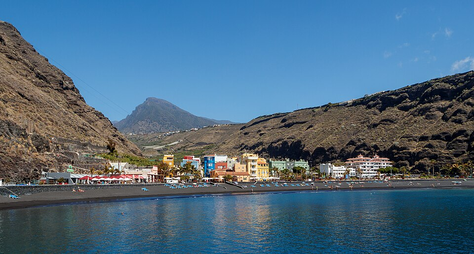
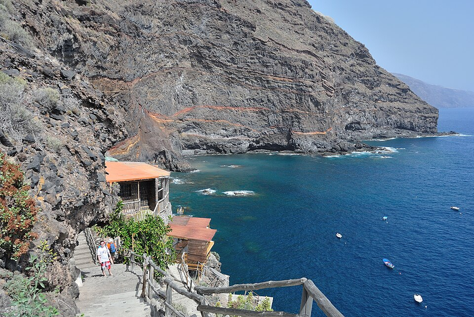
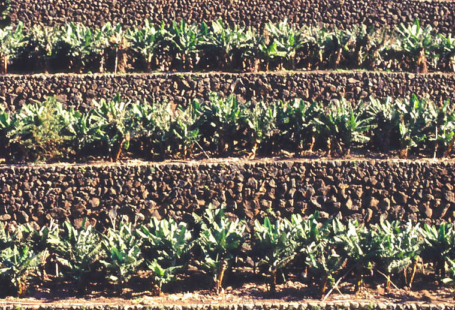
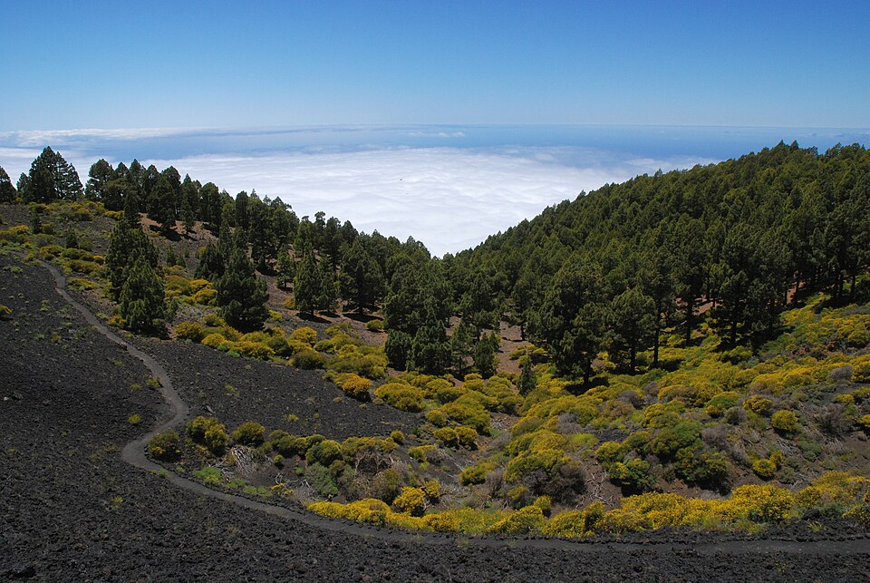

Descubre el paisaje
De la costa de Tazacorte a los paisajes de El Paso, el oeste reúne playas, barrancos y montañas.
Paisaje, cultura y vida local
Descubre paisajes volcánicos, pueblos con encanto y sabores tradicionales. Explora Los Llanos de Aridane, Tazacorte, El Paso, Tijarafe y Puntagorda a tu ritmo.

Tres formas de descubrirla

De la costa de Tazacorte a los paisajes de El Paso, el oeste reúne playas, barrancos y montañas.

Plátano, queso palmero y repostería tradicional forman parte de la cocina local.

Paseos, fotografía y encuentros creativos. Consulta las cinco actividades de nuestra agenda semanal.
Consultar la agenda